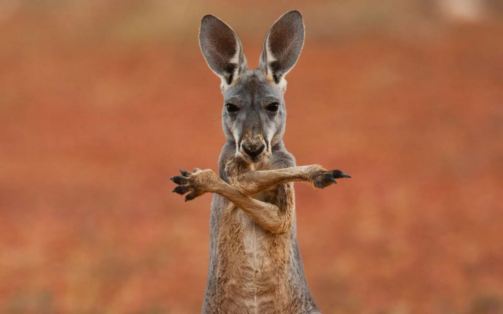

Зовнішній вигляд
Кенгуру рудий, або "великий рудий кенгуру" — вид роду кенгуру, один з найбільших представників родини Кенгурових і загалом один з найбільших ссавців Австралії.
Особливості будови
- Самці мають зріст до 3 м при вазі до 135 кг, самиці — 1,1 м при вазі 35 кг.
- Хутро у них коричневато-руде, звідси і його назва.
- У великого рудого кенгуру дуже міцні ноги та хвіст, які він використовує як для захисту, так і для швидкого бігу.
